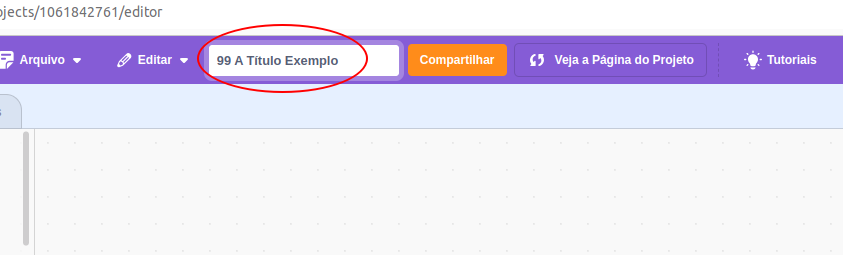

As notas de Pensamento Computacional são divididas em 3 grupos:
1 - Atividades realizadas na plataforma Alura.
2 - Projetos postados na plataforma Scratch (2 ou 3 notas, dependendo do trimestre/turma).
3 - Habilidade com as ferramentas (atividades cotidianas e/ou prova teórica e/ou prova prática).
Entre 70% e 80% da nota depende exclusivamente da realização de atividades durante o período de aulas.
Fones de ouvido são muito úteis no desenvolvimento das atividades. Aqueles que tiverem/quiserem podem trazer um fone (desde que não muito caro) para as aulas de pensamento computacional.
Padrão para nomear os projetos a serem compartilhados no Scratch:
- “L” - Título (Exemplo: 84 - “A” - Programando com Scratch)

NN = Número de chamada do estudante (pra trabalhos em equipe, o número de cada estudante deverá estar separado por vírgula (Exemplo: 84,96,98 - “A” - Programando com Scratch) .
- = Separação necessária entre os elementos do título
“L” = Versão do projeto.
Título = Um nome que identifique o trabalho, podendo ser uma simples cópia do título da unidade/estúdio ou um nome criativo que demonstre relação com o projeto desenvolvido na unidade da Alura.
Cada estudante deverá postar seu projeto no estúdio apropriado (cada projeto tem um estúdio específico).
A data para postagem será a que coincidir com a última aula de cada projeto.
Após a avaliação da postagem original, os projetos deverão ser nomeados como “B” (que serão verificados para fim de recuperação de nota). Os projetos corrigidos (no sentido de melhorados) posteriormente (deverão ser renomeados como “B”, “C” ou “D”, a depender da data de avaliação).